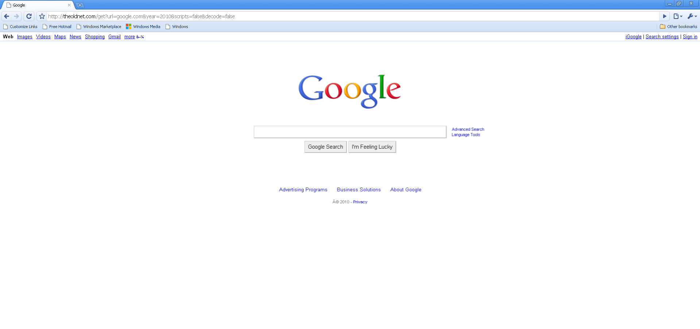

The Border Chrome Theme
A theme for Border that brings back the Chromier days.Download here
Why Chrome? Why the theme?
Well, simply put, many people don't like the default Border UI.
As for Chrome, people in the Windows 96 Discord server mentioned it would be a nice theme
to make. I agree, 2008 Chrome has a superior UI to most browsers that we have today.
Compare the theme with the reference version of Chrome:

Project stats:


Github releases
Click here to see the latest releases of the project. |
Border Official Webpage
Click here to view the official webpage for Border, the most powerful web browser for Windows 96. |
Windows 96
Windows 96, one of the most powerful web OSes. Home of Border. |